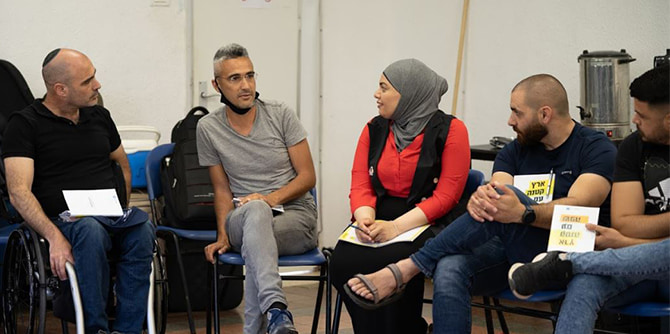
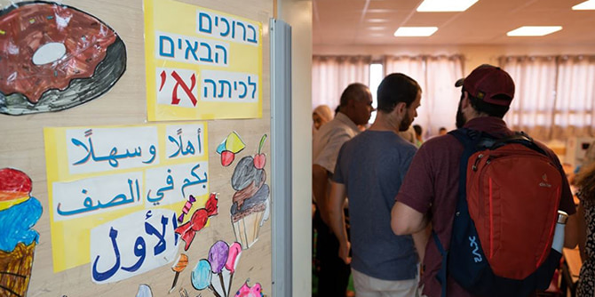
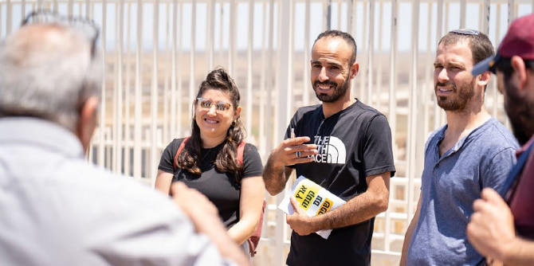

המסע, שלושה ימים אורכו, ביקש לאתגר ולבחון את בליל השפות המתקיימות במרחב: עד כמה אנחנו מבינים את שפתו של האחר, קולם של מי לא נשמע, וכיצד אפשר לבנות שפה וסדר יום משותף לערכי הליבה של החברה הישראלית.
בתור אירוע השיא בתוכנית, המסע זימן אפשרות למפגש משותף של העמיתים עם פיסות של החברה הישראלית כפי שהן מוצאות את ביטויה במגוון הקהילות, במרחבים הגאוגרפיים והחברתיים ובקונפליקטים הנמצאים במרכזה. בהמשך לדיון על האפשרות למציאת המאחד והמשותף ברמה הכלל-ישראלית, המתקיים בתוכנית לאורך השנה, בחנה הקבוצה במשותף, במהלך המסע, סוגיות חברתיות וחינוכיות באמצעות הפריזמה של השפה.

אנחנו מניחים שלשפה החינוכית יש משקל משמעותי בחינוך, וכי היא משקפת ובאה לידי ביטוי הן בחשיבה ובתכנון, והן במעשה החינוכי. שפה היא אמצעי לתקשורת בין אנשים. היא כלי לביטוי רעיונות, חששות ומאוויים אישיים וחברתיים. בכוחה לשחרר אך גם לכבול, לערער על מוסכמות חברתיות ואי-צדק מהצד אחד, ולהעצים יחסי כוח קיימים מהצד השני. לשקף ולהבנות את המציאות החברתית וגם להציע לה אלטרנטיבות. עיקר החוויה הלימודית האישית והקבוצתית התאפשרה דרך "היציאה מן הכיתה" והמפגש הבלתי-אמצעי עם אנשים וזירות מגוונות. עמדנו על הפערים בין הדרכים שבהן המציאות מובנת ומפורשת על-ידי קבוצות שונות בחברה הישראלית, וכן על האפשרות לסמן תמונת ראוי משותפת – אילו מחירים היא גובה ומהן הדרכים להשגתה.
ניסינו לאתגר ולבחון עד כמה השפה הפנימית שלנו מובנת לשומעים אותנו – האם אנחנו מבינים את שפתו של האחר? מי מדבר אלינו? ומה הם אומרים לנו בין השורות? קולו של מי לא נשמע? וכיצד אפשר לבנות שפה משותפת ודרכה הסכמות על ערכי הליבה של החברה הישראלית?

כחלק מהמסע והעיסוק בשפה כמשקפת ומשנה מציאות ביקרנו במסגרות חינוכיות המבקשות לייצר חיבורים בין אוכלוסיות ושפות הנושאות עולמות משמעות שונים. סיורים אלו ביקשו לתרגל התבוננות, לשכלל את החשיבה הרפלקטיבית על המעשה החינוכי, ולזהות את תפקידה של השפה החינוכית ואת הדרכים שבהן היא באה לידי ביטוי במסגרות חינוכיות פורצות דרך.
העיסוק בפריזמה של השפה ומורכבותה בהבנת תהליכים חינוכיים וחברתיים היה משמעותי עבור העמיתים, כפי שביטאה עמיתה עם סיומו של המסע: "השפה העברית לוקה בחסר. חסר לה רגישות חוצה עדה, מגדר, גשר. אחריות כולנו לאפשר לשפה להיות נוכחת במציאות מופרעת... השפה האנושית לוקה בחסר, אך אסור לנו לאבד רגישות.
על החוויה המשותפת כתבה עמיתה אחרת: "במהלך המסע זכיתי להכיר שפות שונות, שיח אחר, מורכבות שונה, מושגים חדשים שהדהדו לי בראש, שאפשרו לי להכיר ולהתעמק בשיח יומיומי של החברה הישראלית. במהלך המסע יצאתי עם שאלות/תהיות שמלוות אותי עד היום, האם נצליח לייצר שפה משותפת במציאות כל כך מורכבת? האם ניתן להכיל את כולם עם השונות והייחודיות שלהם? האם נצליח להקשיב ולחוש את השונה עם המורכבות שלו? האם פערי השפות הם פקטור משמעותי בסלידה ולא בנגיעה?... בארץ כל כך קטנה, כיצד יכולה השפה לאפשר לכולנו להתחבר לשיח משותף ולתת לכל אחד לשמור על הזהות שלו, שתאפשר מקום ותכיל כל אחד עם השורשים/היסטוריה שלו?".
תוכנית מנדל למנהיגות נוער מבקשת לבנות קהילה מגוונת של מנהיגות ומנהיגים בעלי חזון בהיר בחינוך הבלתי פורמלי, המחויבים לפעולה אפקטיבית בתחומי הלכידות החברתית ושוויון ההזדמנויות. העמיתות והעמיתים בתוכנית משמשים בתפקידי הנהגה בתנועות ובארגוני הנוער, מנהלי מחלקות נוער וראשי מכינות קדם-צבאיות. זוהי קבוצה מגוונת (דתיים/חילונים, מרכז/פריפריה, יהודים/ערבים) של 25 עמיתים הנפגשים ליום למידה שבועי במכון מנדל למנהיגות בירושלים.

{kind=link}
{kind=link}
{kind=link}